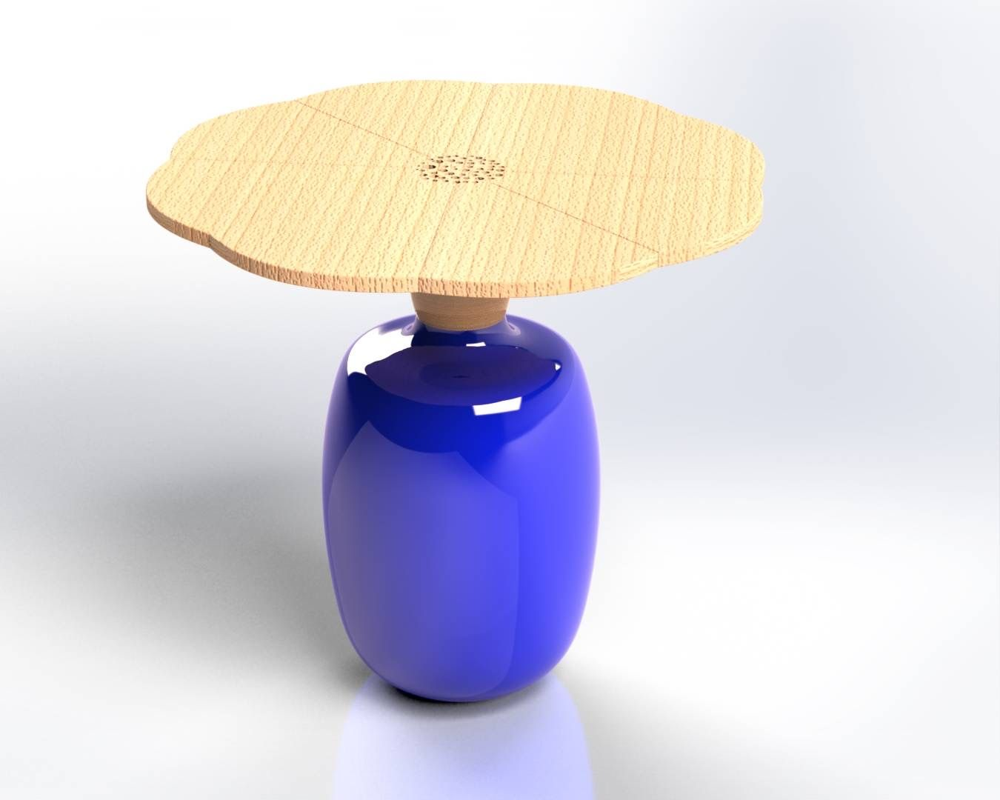
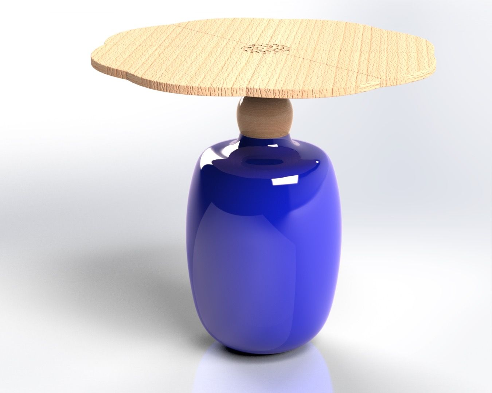

WORK 03 / 29
Blossom Table
The moment of a flower opening, translated into furniture.
Year2023
MaterialsTeak wood and ceramic
StageLimited edition
DESIGN STORY
Blossom takes its cue from a flower opening into bloom. A timber top unfolds like a canopy of petals above a rounded ceramic base, creating an exchange between lightness and solidity. The meeting of natural wood and ceramic gives the table a quiet, sculptural presence—an everyday object shaped by the poetry of growth.
PROJECT LINKS
- Deesawatdeesawat.com
- Premprachawww.prempracha.com
PROJECT DETAILS
- Brand / Manufacturer
- Deesawat Industries Company Limited
- Collaboration
- Prempracha’s Collection
SELECTED PRESENTATIONS
- 2023Maison & Objet Paris · Paris, France

